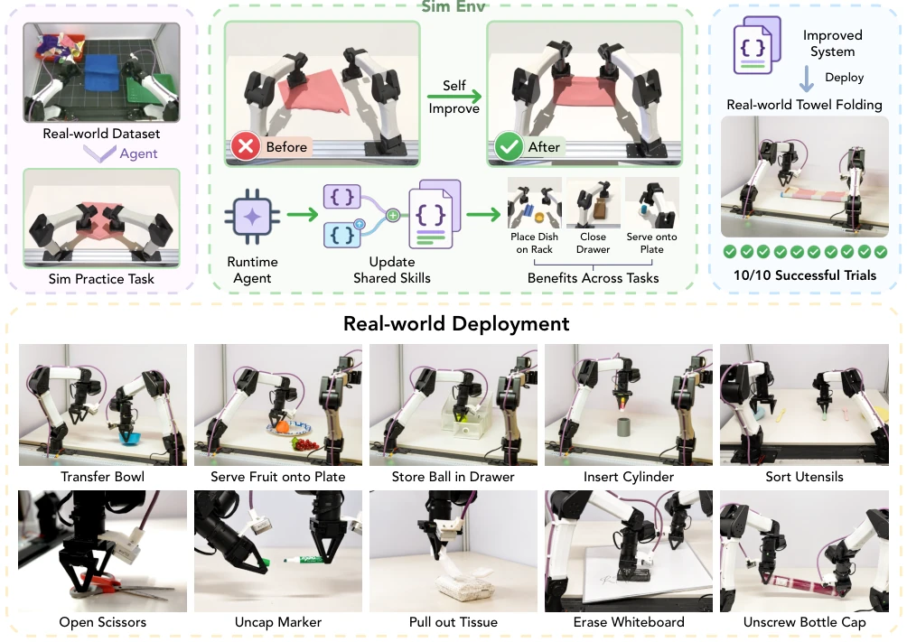
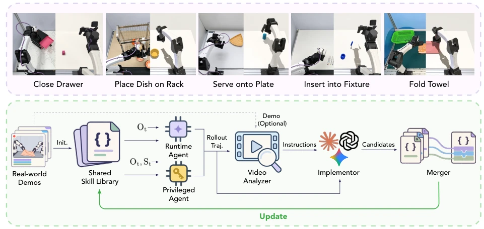
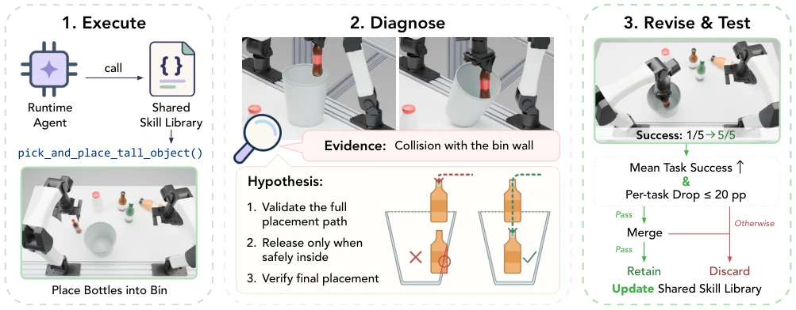
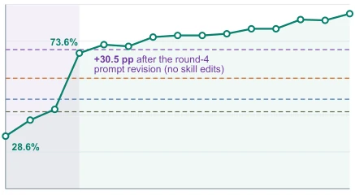
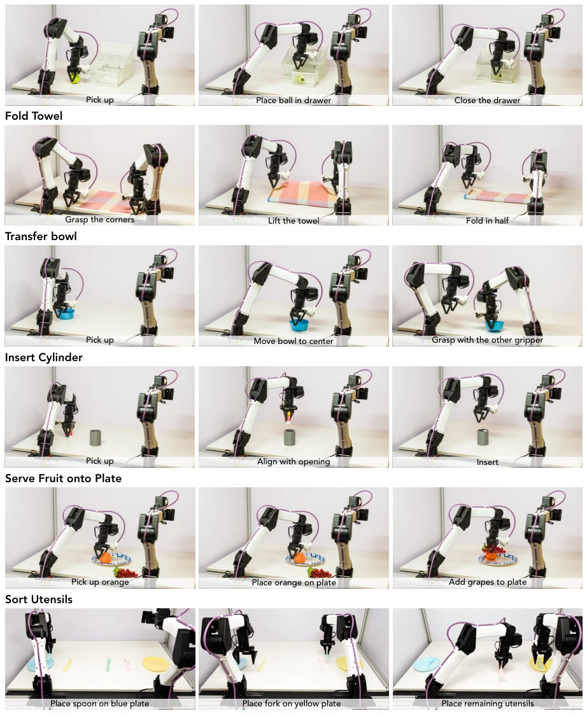
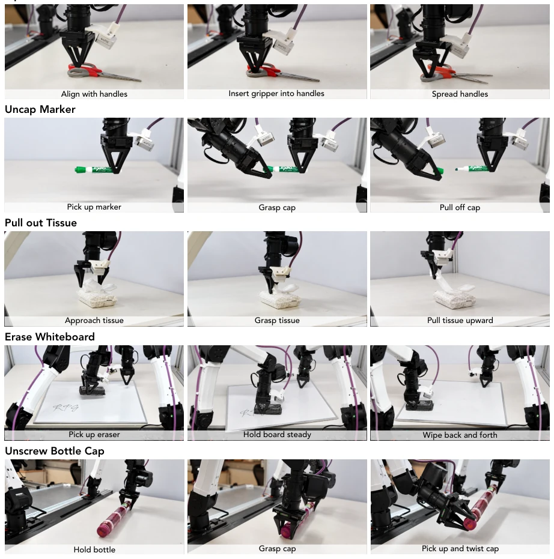

This RPG paper proposes an interesting "no-training" self-evolution approach. It does not touch model weights, focusing instead on the skill library and system prompts, saving computational resources and appearing environmentally friendly. Using a Privileged Agent for specialized diagnosis of failures is much better than relying solely on a Runtime Agent to guess blindly. The 95% simulation success rate is indeed impressive, and it also passed all physical world tests. However, a critique is: this method is essentially "parameter tuning" rather than "learning", relying on offline data quality; if the skill is not in the data, it cannot generate it. Moreover, soft object manipulation like towel folding still fails, indicating a shallow understanding of physical interaction. Additionally, sim-to-real transfer depends on calibration, and the robustness of physical deployment has not been tested on a large scale. However, for teams unwilling to retrain large models, this is indeed a cost-saving shortcut, but generalization depends on whether the offline data is comprehensive enough, as without model weight updates, the upper limit may be constrained.
A long-term pain point of embodied intelligence is the high cost of skill maintenance. Existing methods such as CaP-Agent0 [9] or ASPIRE [5] often rely on online fine-tuning or complex reward design, making maintenance troublesome. Code-as-Policy [7] can generate code, but lacks a closed-loop feedback mechanism. RPG aims to solve: how to enable a shared skill library to self-evolve through simulation practice without changing model weights. Existing work like Voyager [16] accumulates skills but lacks system-level verification, while RHO [17] uses search strategies but is computationally expensive. RPG aims to achieve transferable skill improvements through offline data-driven simulation tasks combined with privileged state diagnosis. This solves the problems of low sample efficiency in traditional RL and unstable LLM inference, allowing the skill library to iterate like software versions.

Fig. 1. RPG constructs simulation practice tasks from an offline dataset to develop and refine reusable robot skills. In Reconstruct, an agent identifies manipulation capabilities from an offline dataset and constructs related practice tasks in simulation. In Practice, agents use execution feedback to revise shared skills and the system prompt, then validate the changes across tasks before retaining them. Skill revisions can benefit other tasks that use the same library. In Go Real, the improved system is calibrated and frozen for deployment on the physical robot. The bottom panel shows qualitative examples of real-world deployment. Quantitative evaluation is conducted on the three tasks reported in Sec. IV-E.
The overall process is divided into three steps. In the Reconstruct phase, the Constructor selects tasks from offline datasets (e.g., ABC [10]), builds simulation practice environments, does not recreate scenes but reuses capabilities. The Practice phase is the core; the Runtime Agent executes using real observations, while the Privileged Agent executes using simulator states (e.g., object coordinates) as a "teacher". The Video Analyzer compares their trajectories and offline videos to diagnose failure reasons (e.g., collisions). The Implementor modifies skill code or prompts based on the diagnosis. The Merger is responsible for cross-task verification, ensuring modifications do not break other tasks. In the Go Real phase, it is frozen for deployment after calibration. The innovations lie in "privileged execution diagnosis" and "cross-task verification merging", ensuring skill library updates are robust. The Privileged Agent provides ideal trajectories, the Video Analyzer uses multimodal data to locate errors, the Implementor generates candidate modifications, and the Merger filters through a Gate function, only merging if there is global gain and local drop does not exceed 20%.

Fig. 2. RPG uses privileged execution and video analysis to guide skill development. The top row shows source scenes alongside representative simulation practice tasks. The Runtime Agent and Privileged Agent share the same model and skill library, but only the latter receives simulator state St in addition to robot observations Ot. For development tasks, the Video Analyzer compares the two agents’ execution records with available videos from the offline dataset to diagnose failures. The Implementor develops new skills, refines existing skills, and revises the system prompt. Candidate changes are evaluated across tasks. The Merger combines selected revisions, and the resulting system is retested before retention.

Fig. 3. Case study of self-improvement on bottle placement. (1) The Runtime Agent attempts the task by calling the shared skill pick_and_place_tall_object(), but the rollout fails when the bottle collides with the bin wall. (2) Failure diagnosis attributes the error to insufficient placement-path validation and proposes a more robust procedure: validate the full trajectory, release only after the bottle is safely inside the bin, and verify the final placement. (3) The revised skill improves task success from 1/5 to 5/5 on the development trials. The candidate is eligible for merging only if mean task success increases while no individual task drops by more than 20 percentage points. Selected eligible revisions are then merged, and the merged system is retained only if it passes the same cr
Simulation tests on 22 tasks, after 15 iterations success rate rose from 28.6% to 95.0%, significantly outperforming ASPIRE (75.5%) and CaP-Agent0 (60.0%). Physical tests on 3 tasks, 100% success. Ablation studies show that removing Video Analyzer or Privileged Agent causes performance to drop back to around 50%, proving the diagnosis mechanism is critical. The skill library increased from 15 items to 38 items. However, towel folding remains a difficulty, and soft object manipulation remains a bottleneck. Physical deployment requires calibration and has no task-specific fine-tuning. Zero-shot deployment demonstrated adaptability to new tasks, such as opening scissors and wiping whiteboards. Results show that improving the shared skill library is more effective than changing the model, but there is a domain gap between simulation and reality, requiring calibration.

Fig. 4. Task completion and revision activity. (A) Round-end systems are evaluated retrospectively on the same 22 tasks × 10 held-out seeds after development is frozen. Dashed lines show ASPIRE, RATs, and the matched-model and strongest CaP-Agent0 configurations (abbreviated CaP). Table II gives the full model comparison. (B) Stacked bars count accepted skill additions (green) and modifications (light blue) in each round. Purple squares mark rounds in which the Runtime Agent’s system prompt was revised (rounds 1–4); their height does not encode a count. The curve represents one improvement run. Rounds do not represent matched computational budgets.

Fig. 5. Physical task execution. Representative execution sequences on the physical YAM robot. The first three rows show the quantitatively evaluated tasks: Store Ball in Drawer, Fold Towel, and Transfer Bowl. Bowl transfer uses table-supported staging. The remaining rows show additional qualitative deployments on Insert Cylinder, Serve Fruit onto Plate, and Sort Utensils. Table V reports outcomes for the three quantitative tasks.

Fig. 6. Qualitative zero-shot real-world deployment. Representative execution sequences for five additional physical tasks: Open Scissors, Uncap Marker, Pull out Tissue, Erase Whiteboard, and Unscrew Bottle Cap. The frozen RPG system receives the task instruction and executes each task without task-specific real-world tuning, demonstrations, or retry-based adaptation. These examples are qualitative and are not included in the quantitative baseline comparison.